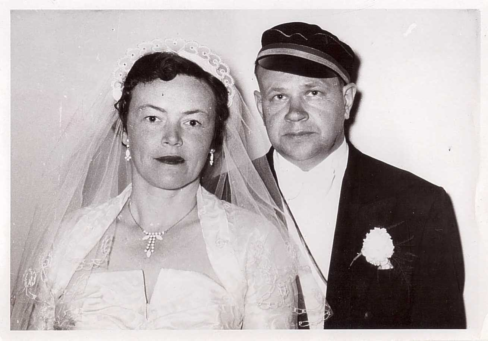
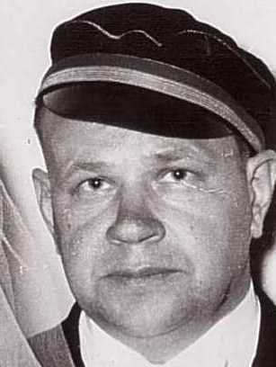

Fricis Gailītis 1907–1969
Husband of Peter's great-aunt Mirdza Augusta Sirlaka.
Fricis Gailītis was born on 6 Jan 1907 in Matkule, Tukums district, Kurzeme (Courland), Latvia1. He married Mirdza Augusta Sirlaka in May 1955 in Toronto, Ontario, Canada9. He arrived at Canada in 19486. He died in Sep 19698.
Family
- Wife
- Mirdza Augusta Sirlaka 1916–2010 · married in May 1955 in Toronto, Ontario, Canada
Life events
| Event | Date | Place and details |
|---|---|---|
| Born | 6 Jan 1907 | Matkule, Tukums district, Kurzeme (Courland), Latvia1 |
| Lived | 1 Jan 1938 | Rīga, Vidzeme, Latvia3 |
| Lived | bet 27 Aug 1945 and 1948 | Hanau, Germany4 |
| Arrived | 1948 | Canada6 |
| Died | 1968 | Toronto, Ontario, Canada According to an online family tree7 |
| Died | Sep 1969 | Preferred version: Laiks (Oct 1970): he died in September 1969. Raimonds's MyHeritage tree (2026) gives 1968, Toronto, no record cited.8 |
| Origin | Latvia According to the family's 2015 tree2 | |
| Work | Matemātikas skolotājs According to an online family tree5 |
Photographs


Records


Open questions
Sources
- AEF DP Registration Record (duplicate), Gailitis Fricis-Andrejs, DocID 67114549.
(1) G11095303 | (2) GAILITIS FRICIS-ANDREJS | (6) 6.1.1907 | Matkules | Tukuma | Latvia | (7) Ev.-lut. | (10) Fricis Gailitis | (11) Lizete Novadnieks | (14) Mag. math. | (15) ģimn. skolotājs
Born 6 January 1907 in Matkule parish, Tukums district, Courland, Latvia to Fricis Gailītis and Lizete Novadnieks, as recorded on his 27 August 1945 Hanau DP-2 registration card (which identifies him as 'Mag. math. / ģimn. skolotājs' — the mathematics teacher who emigrated to Canada in 1948 and married Mirdza Sirlaka in Toronto in May 1955).
- Peter's tree, danenberg.sql, 2007–2015, personae 17, provenance.
- AEF DP Registration Record (duplicate), Gailitis Fricis-Andrejs, DocID 67114549.
(13) LAST PERMANENT RESIDENCE OR RESIDENCE JANUARY 1, 1938: Riga | Latvia
Recorded on his 27 August 1945 Hanau DP-2 card with last permanent residence (1 January 1938) in Rīga, Latvia, where he worked as a gymnasium mathematics teacher ('Mag. math. / ģimn. skolotājs').
- AEF DP Registration Record (duplicate), Gailitis Fricis-Andrejs, DocID 67114549.
(1) G11095303 | Date: 27.VIII.45 | Assembly Center No. Hanau 27
Registered on 27 August 1945 as a Latvian displaced person at Assembly Center Hanau 27 (Hanau, Hesse, Germany; Reg. No. G11095303) before emigrating to Canada in 1948.
- MyHeritage family tree 'Dzimta' of Peter's third cousin (his family site), member GEDCOM export of 26 Oct 2026, I142 (person-6000142), GEDCOM lines 4144–4176.
OCCU · Matemātikas skolotājs
- PCIRO nominal roll for Canada (DocID 81739047), DocID 81739047.
363. | GAILITIS | Fricis-Andrejs | DP | Latvia | Luth. | S | M | 6. 1.1907 | Matkule | Latvia | PC 20238
Emigrated from Germany to Canada in 1948 on PCIRO nominal roll 81739047 (row 363, certificate PC 20238).
- MyHeritage family tree 'Dzimta' of Peter's third cousin (his family site), member GEDCOM export of 26 Oct 2026, I142 (person-6000142), GEDCOM lines 4144–4176.
DEAT · 1968 · Toronto, Kanāda · CAUS Sirdslēkme
- Toronto (news column), Laiks, Nr.83 (17.10.1970), p. 2.
Izvadot māc. A. Briedim, 13. oktobrī Jorkas kapsētas latviešu nodalījumā apglabāja 9. oktobrī 85 g. vecumā mirušo Emmu Sirlaku. Viņa pārmaiņus dzīvojusi gan ASV, kur paliek divas meitas ar ģimenēm, gan - pēdējos gados - Toronto pie meitas Mirdzas Gailītes un znota - matēmatikas skolotāja Friča Gailīša, kas mira pērngada septembrī. Emma Sirlaka nedaudzu gadu laikā pārcieta vairākas smagas operācijas, amputācijā zaudējot vispirms vienu, bet pirms diviem gadiem arī otru kāju.
Translation: With Rev. A. Briedis officiating, Emma Sirlaka, who died on 9 October aged 85, was buried on 13 October in the Latvian section of York Cemetery. She had lived alternately in the USA, where two daughters survive with their families, and, in recent years, in Toronto with her daughter Mirdza Gailīte and son-in-law, the mathematics teacher Fricis Gailītis, who died last September. Within a few years Emma Sirlaka underwent several serious operations, losing first one leg and, two years ago, the other to amputation.
Aged 85, so born about 1885. She spent her old age alternately in the USA, where two of her daughters lived with their families, and (latterly) in Toronto with her daughter Mirdza Gailīte and son-in-law Fricis Gailītis, a mathematics teacher who died in September 1969. She had had both legs amputated over the preceding years.
- Kanada 7 dienās, Jaunais Apskats, Nr.17 (03.06.1955), p. 2.
Laulāti Fricis GailītrM [sic] ar Mirdzu Sirlaks, Vilnis Brastiņš ar Dagmāru Dadzi - Pūriņu.
Translation: Married: Fricis Gailītis to Mirdza Sirlaks; Vilnis Brastiņš to Dagmāra Dadze-Pūriņa.
Married Fricis Gailītis; listed in the Toronto church news (Rev. A. Cops is named just before the list). Fricis Gailītis, a mathematics teacher, died in September 1969 (Laiks, 1970-10-17).